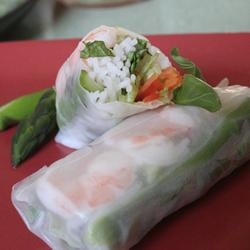

Ingredients
Recipe makes 8 spring rolls
- 2 ounces rice vermicelli
- 8 rice wrappers (8.5 inch diameter)
- 8 large cooked shrimp - peeled, deveined and cut in half
- 1 1/3 tablespoons chooped fresh Thai basil
- 3 tablesppons chopped fresh mint leaves
- 3 tablespoons chopped fresh cilantro
- 2 leaves lettuce, chopped
- 4 teaspoon fish sauce
- 1/4 cup water
- 2 tablespoons fresh lime juice
- 1 clove garlic, minced
- 2 tablespoons white sugar
- 1/2 teaspoon garlic chili sauce
- 3 tablespoons hoisin sauce
- 1 teaspoon finely chopped peanuts
Directions
1. Bring a medium saucepan of water to boil. Boil rice vermicelli 3 to 5 minutes, or until al dente, and drain
2. Fill a large bowl with warm water. Dip one wrapper into the hot water for 1 second to soften. Lay wrapper flat. In a
row across the center, place 2 shrimp halves, a handful of vermicelli, basil, mint, cilantro, and lettuce, leaving about 2
inches uncovered on each side. Fold uncovered sides inward, then tightly roll the wrapper, beginning at the end with the lettuce.
Repeat with remaining ingredients.
3. In a small bowl, mix the fish sauce, water, and lime juice, garlic, sugar and chili sauce.
4. In another small bowl, mix the hoisin sauce and peanuts
5. Serve rolled spring rolls with the fish sauce and hoisin sauce mixtures.
| Prep: 45 Minutes |
| Cook: 5 Minutes |
| Ready In: 50 Minutes |